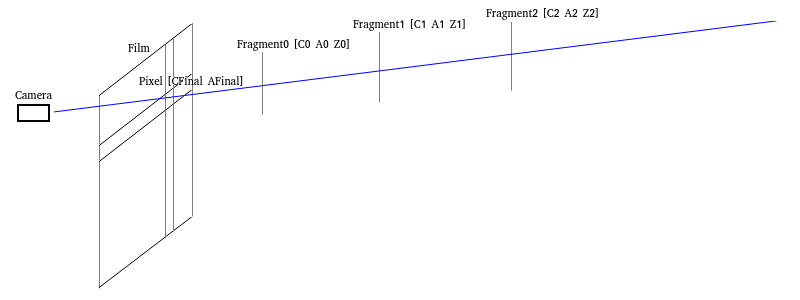

Porter proposed the "Alpha channel"(1.[Porter 1984]) in 1984 which is widely established in
real-time rendering to simulate the transparent effect.
We assume that one "pixel" corresponds to a series of "fragments" which can be
treated as the triples [CiAiZi] (C-Color
A-Alpha Z-Depth), as shown in the following figure:

Then the final color of the pixel can be calculated as CFinal=i=0∑n(ZjNearerZi∏(1−Aj))AiCi.
The V(Zi)=ZjNearerZi∏1−Aj is also called the visibility function which will be explained later.
Then the above equation can also be written as CFinal=i=0∑nV(Zi)AiCi.
Note that the physical meaning of the Alpha is the "partial coverage" rather than the
"transmittance".
The Alpha stands for the ratio of the area covered by the fragments to the area covered by the pixel.
That's why we use the scalar "float" instead of the vector "RGB" to represent the Alpha.
This circumstance is also called the "Wavelength Independent" in some literatures.
For example, when we observe a red brick through a blue silk scarf, the color of the brick appears to be the
"addition" of the blue and red. The fibers of silk scarf are intrinsically opaque but there exist gaps
between the fibers. We see the brick through the gaps. Namely, the silk scarf "partially covers" the
brick.
However, the transmittance is "Wavelengh Dependent". If we observe a red brick through a
blue plastic film, the color of the brick appears to be black (the "Multiplication" of the blue and
red). The red brick only reflects the red light while the blue plastic film only allows blue light to pass
through. All the reflected light of the red brick is absorbed by the blue plastic film and then the red brick
appears to be black.
You can do the above two experiments by yourself.
If we demand the transmittance effect, the techniques related to the "Participating
Media"(2.[Yusor 2013]、3.[Hoobler 2016]) should be used.
By the physical meaning of the Alpha, we can comprehend the visibility function V(Zi) evidently since a fragment can only be
(partially) covered by the fragments nearer than it.
Some literatures treat the visibility function V(Zi) as the "transmittance".
Technically, that's wrong.
2. Ordered Transparency
In real time rendering, the classic method is to sort the transparent geometries and use the
"Over/Under Operation"(1.[Porter 1984]、4. [Dunn 2014]) to calculate the final color CFinal recursively:
1.OpaquePass
draw the opaque geometries and have the BackgroundColor and the BackgroundDepth.
2.TransparencyPass
use the BackgroundDepth for depth test (without depth write), sort the geometries from far to near/from near
to far and use Over/Under Operation to calculate recursively.
Over Operation
sort the fragments from far to near to use the Over Operation CFinal_0=BackgroundColor CFinal_n=(AnCn)+(1−An)CFinal_n−1
Under Operation
sort the fragments from near to far to use the Under Operation CFinal_0=0 ATotal_0=1 CFinal_n=ATotal_n−1(AnCn)+CFinal_n−1 ATotal_n=ATotal_n−1(1−An)
Note that the ATotal in Under Operation is exactly the visibility function V(Zi) above.
At last, the result image of the OpaquePass is treated as the fragments with "A=1
C=BackgroundColor" and added to the final color by the Under Operation.
By the mathematical induction, we can prove that the Over Operation and the Under Operation are
equivalent. Both can calculate the final color CFinal correctly by i=0∑nV(Zi)AiCi.
Technically, the correctness of the Over/Under Operation can only be guaranteed by sorting the
"fragments" from far to near/from near to far. However, in real time rendering, the sorting is based
on the geometries not the fragments. If there exists interlacing inside the geometry, the order of the fragments
will not follow and thus we have to explore the OIT(Order Independent Transparency) algorithm to settle this
problem.
Note that keeping the geometries orderly also prohibits the batching of the geometries with the same
material and thus results in extra state changing which is hostile to the performance.
3-1. Depth Peeling
Depth Peeling(5.[Everitt 2001]) is an archaic method which might be used in real time rendering.
3-1-1. Render Pass
1.OpaquePass
draw opaque geometries and have the BackgroundColor and the BackgroundDepth.
2.NearestLayerPass //GeometryPass
copy the BackgroundDepth to initialize the depth buffer
with depth test(NearerOrEqual) and depth write, sort the transparent geometries by [material, front-to-back]
and draw them, having the NearestLayerColor and the NearestLayerDepth
add the NearestLayerColor to the final color CFinal by Under Operation
//Note that the depth peeling doesn't depend on the order of the fragments and we sort the geometries from
near to far is merely to improve the performance by the EarlyDepthTest.
3.SecondNearestLayerPass //GeometryPass
copy the BackgroundDepth to initialize the depth buffer
with depth test(NearerOrEqual) and depth write, sort the transparent geometries by [material,
front-to-back], bind the NearestLayerDepth to the SampledTextureUnit and draw them with discarding the
fragments NearerOrEqual than the NearestLayerDepth explicitly in the fragment shader, having the
SecondNearestLayerColor and the SecondNearestLayerDepth
add the SecondNearestLayerColor to the final color CFinal by Under Operation
//Note that the depth peeling doesn't depend on the order of the fragments and we sort the geometries from
near to far is merely to improve the performance by the EarlyDepthTest.
4.ThirdNearestLayerPass //GeometryPass
copy the BackgroundDepth to initialize the depth buffer
with depth test(NearerOrEqual) and depth write, sort the transparent geometries by [material,
front-to-back], bind the SecondNearestLayerDepth to the SampledTextureUnit and ...
//Note that the depth peeling doesn't depend on the order of the fragments and we sort the geometries from
near to far is merely to improve the performance by the EarlyDepthTest.
The subsequent operations are similar to the above, omitted... //we can peel N layers by N
geometry passes. The application can choose the proper N according to the requirements.
N+2.CompositePass //FullScreenTrianglePass
At last, the BackgroundColor by OpaquePass is added to the final color by the Under Operation.
Technically, it's legal to peel the layers from far to near and add them to the final color by the
Over Operation.
However, if the number of the geometry passes N is too low to peel all layers, the farthest/nearest layers will
be ignored when we use the Under/Over Operation.
Evidently, the visibility function V(Zi) is monotonically decreasing. It follows
that the farthest layers generally contribute little to the final color and introduce little error if they are
ignored. That's why we prefer the Under Operation to the Over Operation.
3-1-2. Conclusion
Evidently, the depth peeling has a fatal disadvantage that the number of the geometry passes is too
high and the performance is too low and thus the depth peeling has never been popular since proposed decades
ago.
3-2. Stochastic Transparency
The estimation of the visibility function V(Zi) depends on the order of the fragments.
This results in that the estimation of the final color CFinal=i=0∑nV(Zi)AiCi depends on the order.
By this fact, Enderton proposed the "stochastic transparency"(6.[Enderton 2010]) in 2010 which is
based on the the principles of statistics and uses MSAA hardware to random sampling to estimate the visibility
function V(Zi) order independently.
3-2-1. Stochastic Depth
With the MSAA on, we assume the relationship among the "pixel", "fragment" and
"sample" as the following figure:
one pixel corresponds to several samples (for example, in the above figure, one pixel corresponds to 4 samples,
namely, 4X MSAA) and at the same time one pixel corresponds to a series of fragments.
However, the same sample corresponding to the same pixel can only be occupied by one fragment of these fragments
corresponding to the same pixel(The storage is limited, which can hold only one fragment. That's evident).
At the same time, we assume that: Zj denotes one fragment of the fragmentsZ0Z1Z2 ... Zn corresponding to the same pixel. Zs denotes the fragment which occupies the sample in the final result depth image(the StochasticDepth in the
implementation). As we have explained above, by the limit of the storage, the sample can only be occupied by one
fragment. Zi denotes the fragment which is being discussed(which can be considered as the fragment being executed by
the fragment shader in the implementation).
In addition, we assume that:
By setting the value of gl_SampleMask/SV_Coverage, we ensure that the probability of each sample be occupied by
the fragment [ CiAiZi ] is Ai.
With depth test and depth write, we ensure that the nearer fragment must overwrite the farther fragment and the
sample is occupied by the nearest fragment.
The probabilities of different fragments are uncorrelated.
We claim that for each sample [ CsAsZs ] in the final result depth image, for each fragment [ CiAiZi ] among the fragments corresponding to the same pixel, the probability of "Zi is Near-or-Equal than Zs" is exactly the visibility function V(Zi)=ZjNearerZi∏1−Aj.
Proof:
Since "the nearer fragment must overwrite the farther fragment", if "Zi is Near-or-Equal than Zs", then we have that the sample in the final result depth image is occupied by [ CiAiZi ] or the farther fragments corresponding to the same pixel.
Namely, the sample is not be occupied by the nearer fragments corresponding to the same pixel.
Evidently, the probability of "the sample is not be occupied by one fragment Zj among these nearer fragments" is 1−Aj.
Since "the probabilities of different fragments are uncorrelated", by the multiplication principle,
the probability of "the sample is not be occupied by the nearer fragments corresponding to the same
pixel" is ZjNearerZi∏1−Aj which is exactly the visibility function V(Zi).
Besides, we assume that:
One pixel corresponds to S samples, namely, S-X MSAA.
We claim that if the count of the samples such that "Zi is Near-or-Equal than Zs" is Count(Zi), let SV(Zi)=SCount(Zi), we have that the
expected value of the SV(Zi) is the visibility function V(Zi).
Proof:
Evidently, this is immediate from the above proposition.
Since we can get the value of Count(Zi) by sampling texture, we can use SV(Zi) to estimate the visibility function V(Zi).
Note that the extension "ARB_texture_multisample" should be enabled to use texelFetch on sampler2DMS
in OpenGL.
We should use the knowledge of statistics to prove why we can estimate and thus the proof is omitted.
3-2-2. Alpha Correction
We claim that i=0∑n(V(Zi)Ai)=1−i=0∏n(1−Ai).
Proof:
Prove by the mathematical induction.
1.basis:
when n=0:
left = i=0∑0(V(Zi)Ai)
= V(Z0)A0
= 1⋅A0
= A0
right = 1−i=0∏0(1−Ai)
= 1−(1−A0)
= A0
left = right the equation holds
2.inductive step:
we assume that the proposition holds for n=k.
when n=k+1:
left = i=0∑k+1(V(Zi)Ai)
= i=0∑k(V(Zi)Ai)+V(Zk+1)Ak+1
= 1−i=0∏k(1−Ai)+V(Zk+1)Ak+1
= 1−i=0∏k(1−Ai)+(i=0∏k(1−Ai))⋅Ak+1
= 1−(i=0∏k(1−Ai))⋅(1−Ak+1)
= 1−i=0∏k+1(1−Ai)
right = 1−i=0∏k+1(1−Ai)
left = right the equation holds
Evidently, the expected value of i=0∑n(SV(Zi)Ai) is i=0∑n(V(Zi)Ai).
Since i=0∑n(V(Zi)Ai)=1−i=0∏n(1−Ai), we have that the expected value of i=0∑n(SV(Zi)Ai) is 1−∏i(1−Ai).
The Alpha correction can be considered as the normalizing of the SV(Zi).
This means that we assume that i=0∑n(SV(Zi)Ai)SV(Zi)=i=0∑n(V(Zi)Ai)V(Zi) and we have that
V(Zi)=SV(Zi)i=0∑n(SV(Zi）Ai）i=0∑n(V(Zi)Ai)=SV(Zi)i=0∑n(SV(Zi)Ai)1−i=0∏n(1−Ai).
We should use the knowledge of statistics to explain the meaning of the Alpha correction and thus the
explanation is omitted.
3-2-3. Render Pass
1.OpaquePass
draw the opaque geometries and have the BackgroundColor and the BackgroundDepth.
2.StochasticDepthPass //GeometryPass
copy the BackgroundDepth to initialize the depth buffer
with MSAA, with depth test(NearerOrEqual) and depth write, sort the transparent geometries by [material,
front-to-back] and draw them with setting the pseudo random value of gl_SampleMask/SV_Coverage by the Ai of [ CiAiZi ], having the StochasticDepth
Note that:
2-1.The stochastic transparency doesn't depend on the order of the fragments and we sort the geometries from
near to far is merely to improve the performance by the EarlyDepthTest.
2-2.Turning on MSAA in StochasticDepthPass is to random sample and the stochastic transparency intrinsically
doesn't demand other passes to turn on the MSAA.
If the application demands the effect of "Spatial AntiAliasing", the application can turn on MASS
in other passes(Evidently, the application use arbitrary algorithms(for example, the FAXX) in other
passes).
These's no relationship between the MSAA used for random sampling (in StochasticDepthPass) and the MSAA used
for spatial antialiasing (in other passes). For example, we can use 8X MASS in StochasticDepthPass while use
4X MSAA in other passes.
2-3.To ensure the uncorrelation among fragments, we must use pseudo random value rather than the
"AlphaToCoverage" hardware feature.
2-4.The depth value used in AccumulatePass is the value of the shading position not the value of the
sampling position. To be consistant, we prefer to write the depth (value of the shading position) to
gl_FragDepth/SV_Depth in the fragment shader.
2-5.By the limit of the hardware, the maximum sample count of MSAA is 8X MSAA. The author (6.[Enderton
2010]) proposed that we can use multiple passes to simulate more sample counts. Due to the performance
issue, we only use one pass.
3.AccumulateAndTotalAlphaPass //GeometryPass
copy the BackgroundDepth to initialize the depth buffer
with depth test without depth write, with MRT and SeparateBlend/IndependentBlend, sort the transparent
geometries by [material], bind the StochasticDepth to the SampledTextureUnit and draw them with estimate
SV(Zi) by sampling the texture in fragment
shader, having the StochasticColor, CorrectAlphaTotal and StochasticTotalAlpha
Note that:
3-1.Since the depth write is turned off, the order of the geometries doesn't impact on the performance and
thus we sort the geometries only by the material.
3-2.We have that "StochasticColor = i=0∑nSV(Zi)AiCi", "CorrectAlphaTotal = 1−i=0∏n(1−Ai)" and "StochasticTotalAlpha =
i=0∑n(SV(Zi)Ai)".
3-3.The relationship between the AlphaTotal and the TotalAlpha is TotalAlpha = 1 – AlphaTotal. The term
"TotalAlpha" is from the stochastic transparency(6.[Enderton 2010]) while the term
"AlphaTotal" is from the Under Operation(1.[Porter 1984]、4. [Dunn 2014]).
3-4.The StochasticTotalAlpha is only used when the Alpha correction is turned on. This means that we can
reduce one RT if we don't turn on the Alpha correction.
3-5.The author(6.[Enderton 2010]) use two separate passes AccumulatePass(which calculates the
StochasticColor and the StochasticTotalAlpha) and TotalAlphaPass(which calculates CorrectAlphaTotal).
However, we can totally merge them into a single pass. Maybe the SeparateBlend/IndependentBlend was not
supported by the hardware when the author published the paper.
4.CompositePass //FullScreenTrianglePass
Without the Alpha correction, the total contribution of the transparent geometries:
TransparentColor = i=0∑nSV(Zi)AiCi = StochasticColor
With the Alpha correction, the total contribution of the transparent geometries:
TransparentColor = ⎩⎨⎧i=0∑n(SV(Zi)i=0∑n(SV(Zi)Ai)1−i=0∏n(1−Ai))AiCi0ifi=0∑nSV(Zi)Ai)>0ifi=0∑nSV(Zi)Ai=0
= ⎩⎨⎧(i=0∑nSV(Zi)AiCi)i=0∑n(SV(Zi)Ai)1−i=0∏n(1−Ai)0ifi=0∑n(SV(Zi)Ai)>0ifi=0∑n(SV(Zi)Ai)=0
= ⎩⎨⎧StochasticColorStochasticTotalAlpha1−CorrectAlphaTotal0ifi=0∑n(SV(Zi)Ai)>0ifi=0∑n(SV(Zi)Ai)=0
Note that the StochasticTotalAlpha of opaque geometries is evidently zero. However, due to the random
sampling, the StochasticTotalAlpha of the transparent geometries can be zero as well.
Then, add the TransparentColor to the final color CFinal by the Over Operation: CFinal = TransparentColor + CorrectAlphaTotal × BackgroundColor
Note that the BackgroundColor has been added to the color buffer. We can output the TransparentColor and
CorrectAlphaTotal in the fragment shader and use the Alpha blend hardware feature to implement the Over
Operation.
3-2-4. Tile/On-Chip Memory
The stochastic transparency is intrinsically suitable to mobile GPU.
In the traditional desktop GPU, the performance bottleneck is the MSAA. Since one pixel corresponds to
S samples, the bandwidth is increased by S times.
However, in the mobile GPU, this problem has been solved effectively. We can keep the MSAA image in
the Tile/On-Chip Memory and discard the MSAA image when the renderpass ends without writing to the main memory.
This means that the bandwidth can be decreased to almost zero.
The Vulkan/Metal API allows the application to set this configuration explicitly:
Use the "VK_IMAGE_USAGE_TRANSIENT_ATTACHMENT_BIT"/"MTLStorageModeMemoryless" to set the
storage mode of the image to the Tile/On-Chip Memory explicitly.
And the images with this storage mode prohibit to be read by the traditional sampled texture unit in the
fragment shader and must be read by the "Subpass Input"/"[color(m)]Attribute".
The OpenGL API doesn't allow the application to set this configuration explicitly but we can use
"FrameBufferFetch"/"PixelLocalStorage"(16.[Bjorge 2014]) to indicate our purpose.
3-2-4-1. Vulkan
In Vulkan, one "RenderPass" consists of several "SubPass". The MSAA simple count
of different attachments of the same RenderPass may not be the same. However, the MSAA sample count of the
attachments refered by the same SubPass must be the same and the MSAA sample count is also expected to be the
same as the count in MultisampleState of the PipelineState when issuing DrawCall.
The stochastic transparency can be implemented in one renderPass as the following: //We suppose the
application doesn't turn on the MSAA for "Spatial AntiAliasing".
In Metal, there is no such thing like InputAttachment. We instead use the [color(m)]Attribute in
fragment shader to read the ColorAttachment.
However, this design introduces the limit that the [color(m)]Attribute only permits us to read the
ColorAttachment in the fragment shader and we have no method to read the DepthAttachment. We have to use an
extra ColorAttachment to store the Depth(17.[Apple]) although this may allow us to save the bandwidth by writing
the lower precise depth to the ColorAttachment and discarding the DepthAttachment.
This limit may be related to the explanation of the
"D3D12_RESOURCE_FLAG_DENY_SHADER_RESOURCE"(18.[Microsoft]). This means that for Apple's GPU, the
performance may be improved by prohibiting reading the DepthAttachment.
Besides, there is no equivalent of "subpassInputMS" in Metal. While turning on the MSAA in
Metal, the fragment shader is excuted isolatedly for each sample, we can only use the [color(m)]Attribute to
read the value of one sample not all samples in the pixel and thus we can't calculate the SV(Zi).
However, we may simulate the "subpassInputMS" by multiple ColorAttachments without MSAA.
Since we turn off the MSAA, there exists only one sample in the DepthAttachment and thus we can't perform MSAA
depth test by the hardware feature. This means that we have to simulate the depth test by programmable blending
which will be explained later in the K-Buffer.
Evidently, the simulation is expected to be hostile to the performance and I don't suggest using this
method in Metal.
3-2-5. Conclusion
Since MSAA is efficient on mobile GPU, the stochastic transparency is intrinsically suitable to mobile
GPU. We can use the modern Vulkan API to fully explore the advantages of the mobile GPU.
However, due to the limit by the design of the Metal, I don't suggest using the stochastic
transparency in Metal.
Evidently, the vertex shader doesn't read or write the ColorAttachment and thus doesn't benifit from
the Tile/On-Chip Memory of the mobile GPU. The mobile GPU prefers the fragment processing to the vertex
processing(10.[Harris 2019]).
The stochastic transparency still need to be improved since we still have two geometry
passes(StochasticDepthPass and AccumulateAndTotalAlphaPass) which may cause the vertex processing to be the
performance bottleneck.
The stochastic transparency introduces error by itself due to the random sampling while the Alpha
correction eliminates the noise effectively and thus the noise impacts little.
The demo was originally the "StochasticTransparency" of the "NVIDIA SDK11
Samples"(9.[Bavoil 2011]). However, there are three fatal problems in the original code provide by the
NVIDIA:
1."Turning on MSAA in StochasticDepthPass is to random sample and the stochastic transparency intrinsically
doesn't demand other passes to turn on the MSAA." The original code provided by the NVIDIA turns on the
MSAA in all passes and thus the frame rate of the stochastic transparency is unexpectedly lower than the depth
peeling. I turn off all the unnecessary MSAA and the frame rate increases from 670 to 1170 while the frame rate
of deep peeling is 1070.
2."The author use two separate passes AccumulatePass and TotalAlphaPass. However, we can totally merge them
into a single pass." The original code provided by the NVIDIA follows the author and use two separate
passes. I merge the separate passes and the frame rate increases from 1170 to 1370.
3."The depth value used in AccumulatePass is the value of the shading position not the value of the
sampling position. To be consistant, we prefer to write the depth (value of the shading position) to
gl_FragDepth/SV_Depth in the fragment shader." The original code provided by the NVIDIA doesn't do this.
However, the Alpha correction fixes the error well and there's little impaction on the effect.
3-3. K-Buffer
Carpenter proposed the "A-Buffer" (11.[Carpenter 1984]) in the same year when Porter
proposed the Alpha channel. In the A-Buffer, each pixel corresponds to a list in which all fragments
corresponding to this pixel are stored. After sorting the fragments in the list by the depth, evidently we can
use Over/Under operation to calculate the final color CFinal.
Although A-Buffer can be implemented by UAV/StorageImage and atomic operations at present, the implementation is
very tedious and inelegant. Besides, the performance of the list is low since the address of the list is not
continuous and thus unfriendly to the cache. Thus there is almost no implementation in reality.
Bavoil improved the A-Buffer and proposed K-Buffer (12.[Bavoil 2007]) in 2007. In K-Buffer, we limit
the number of the fragments corresponding to each pixel to no more than K. With this limit, the K-Buffer can be
implemented more elegantly and efficiently.
3-3-1. RMW (Read Modify Write) Operation
In the renderpass in which we generate the K-Buffer, the following RMW operation is performed on each
fragment:
1. Read: read the (at most K) fragments corresponding to the same pixel from K-Buffer
2. Modify: use the information of the current fragment and modified the (at most K) fragments which have been
read from the K-Buffer
3. Write: write the (at most K) fragments which have been modified to the K-Buffer
For the current hardware, we can immediately implement the RMW operation by the UAV/StorageImage.
However, things are far from simple. In general, the RMW operations performed on the fragments corresponding to
the same pixel should be mutually exclusive to ensure the correctness.
Although the API guarantees the order and dependency of different draw calls, the GPU designers always
tend to full explore the parallelism to improve the performance. In general, the GPU may still execute these
draw calls in parallel and merely synchronize at some points.
The API doesn't guarantee the order or dependency of the executions of the fragments (corresponding to
the same pixel) inside the same draw call. Evidently, the executions can be considered to be parallel since the
GPU is intrinsically parallel.
The desktop GPU is "Sort-Last Fragment" (13.[Ragan-Kelley 2011]). The parallelism of the
fragments is expected to be high since the synchronization occurs at the "Reorder Buffer"
(13.[Ragan-Kelley 2011]) which is after the fragment shader and just before the Alpha blend.
The mobile GPU is "Tile-Based Sort-Middle" (13.[Ragan-Kelley 2011]). The executions of the
fragments corresponding to the same pixel inside the same draw call can be considered to be serial
(13.[Ragan-Kelley 2011]) since there doesn't exist the "Reorder Buffer". However, we shouldn't rely on
this since the API doesn't guarantee that.
Bavoil proposed two hardware proposals the "Fragment Scheduling" and the "Programmable
Blending" to solve this problem in 2007 (12.[Bavoil 2007]). Both two proposals have been widely supported
by the hardware in reality at present.
3-3-2. Fragment Scheduling
The fragment scheduling corresponds to the
RasterOrderView/FragmentShaderInterlock/RasterOrderGroup(14.[D 2015], 15.[D 2017]) at present which is generally
suitable to the desktop GPU.
The pseudo code to implement the K-Buffer by the fragment scheduling is generally as the following:
// This part of code doesn't need to be mutually exclusive
calcalte lighting and shading ...
// Enter the critical section#if RasterOrderView // Direct3D
read from ROV
#elif FragmentShaderInterlock // OpenGL/Vulkan
beginInvocationInterlockARB
#elif RasterOrderGroup // Metal
read from ROG
#endif// This part of code is within the protection of the critical section
perform the RMW operation on the K-Buffer ...
// Leave the critical section#if RasterOrderView // Direct3D
write to ROV
#elif FragmentShaderInterlock // OpenGL/Vulkan
endInvocationInterlockARB
#elif RasterOrderGroup // Metal
write to ROG
#endif
In theory, the contents which we read from or write to the ROV/ROG is not important since we merely
read or write to enter/leave the critical section. Thus the proposal of "FragmentShaderInterlock" is
more elegant. We don't have to read from or write to the ROV/ROG when we perform the RMW operation on the
K-Buffer and the regular UAV/StorageImage(14.[D 2017]) can be used since the related code has been within the
protection of the critical section.
The programmable blending allows the fragment shader to perform RMW as an atomic operation on the
color attachment. The hardware guarantees the mutual exclusion of the fragments corresponding to the same pixel
automatically.
We can enable the MRT and implement the K-Buffer by programmable blending. We assume that one pixel
corresponds to four [C A Z] fragments in the K-Buffer and the related Metal code is generally as the following:
structKBuffer_ColorAttachment
{
//In general, [[color(0)]] is used to store the CFinal
half4 C0A0[[color(1)]]; //R8G8B8A8_UNORM
half4 C1A1[[color(2)]]; //R8G8B8A8_UNORM
half4 C2A2[[color(3)]]; //R8G8B8A8_UNORM
half4 C3A3[[color(4)]]; //R8G8B8A8_UNORM
half4 Z0123[[color(5)]]; //R16G16B16A16_FLOAT
};
structKBuffer_Local
{
half4 CA[4]
half Z[4]
};
fragment KBuffer_ColorAttachment KBufferPass_FragmentMain(..., KBuffer_ColorAttachment kbuffer_in){
// This part of code doesn't need to be mutually exclusive
CA = CalcalteLighting_And_Shading(...)
// In general, "Z" denotes position.z
Z = ...
KBuffer_Local kbuffer_local;
// Read K-Buffer// We enter the critical section automatically when we read the ColorAttachment
kbuffer_local.Z[0] = kbuffer_in.Z0123.r;
kbuffer_local.Z[1] = kbuffer_in.Z0123.g;
kbuffer_local.Z[2] = kbuffer_in.Z0123.b;
kbuffer_local.Z[3] = kbuffer_in.Z0123.a;
kbuffer_local.CA[0] = kbuffer_in.C0A0;
kbuffer_local.CA[1] = kbuffer_in.C1A1;
kbuffer_local.CA[2] = kbuffer_in.C2A2;
kbuffer_local.CA[3] = kbuffer_in.C3A3;
// Modify K-Buffer// This part of code is within the protection of the critical section
... (The concrete code depends on the requirements of the application)
// Write K-Buffer // We leave the critical section automatically after we write the ColorAttachment
KBuffer_ColorAttachment kbuffer_out;
kbuffer_out.C0A0 = kbuffer_local.CA[0];
kbuffer_out.C1A1 = kbuffer_local.CA[1];
kbuffer_out.C2A2 = kbuffer_local.CA[2];
kbuffer_out.C3A3 = kbuffer_local.CA[3];
kbuffer_out.Z0123 = half4(kbuffer_local.Z[0], kbuffer_local.Z[1], kbuffer_local.Z[2], kbuffer_local.Z[3]);
return kbuffer_out;
}
3-3-4. MLAB (Mult Layer Alpha Blending)
Salvi proposed three algorithms which are all based on the K-Buffer in 2010, 2011 and 2014(19.[Salvi
2010], 20.[Salvi 2011], 21.[Salvi 2014]) and we intend to explain the lastest one which is called the MLAB
proposed in 2014.
3-3-4-1. K-Buffer
In MLAB, the format of the fragments in K-Buffer is [ AiCi | 1−Ai | Zi ].
The algorithm is generally as the following:
1. Initializes the fragments in the K-Buffer to the "empty fragment" which is "Ci=0 Ai=0 Zi=farthest". // In reality, since the Zi is in the range from 0 to 1, we only need to ensure that the value of Zi is farther than all possible values.
2. When we generate the K-Buffer, the modify operation performed on the K-Buffer is to sort the fragments from
near to far based on the Zi and insert the current fragment (which the fragment shader is executing) into the proper position based on
the Zi.
Evidently we have K+1 fragments at present. Then the modify operation will merge the two farthest fragments into
one fragment based on the rule of Under operation such that [ AiCi | 1−Ai | Zi ] + [ Ai+1Ci+1 | 1−Ai+1 | Zi+1 ] = [ AiCi+(1−Ai)Ai+1Ci+1 | (1−Ai)(1−Ai+1) | Zi ] and thus we have K fragments again.
Evidently, if we insert another fragment nearer than the fragment merged by two fragments, there exists error.
By Salvi, the error intruduced by the two farthest fragments is the lowest since the visibility function V(Zi) is monotonically decreasing and the
farthest fragments generally introduce the lowest error.
3. Based on the generated K-Buffer, we calculate the total contribution of the transparent geometries to the
final color CFinal by the K fragments.
3-3-4-2. Render Pass
1. OpaquePass
draw the opaque geometries and have the BackgroundColor and the BackgroundDepth.
2. KBufferPass // GeometryPass
reuse the BackgroundDepth by the OpaquePass
use clear load_op to initilize the fragments in the K-Buffer to the "empty fragment" [ 0 0
farthest]
with depth test without depth write, sort the transparent geometries by [material] and draw them to generate
the K-Buffer
Note that since the depth write is turned off, the order of the geometries doesn't impact on the performance
and thus we sort the geometries only by the material.
3. CompositePass // FullScreenTrianglePass
Based on the generated K-Buffer, use the Under operation to calculate the total contribution of the
transparent geometries to the final color CFinal: TransparentColor and AlphaTotal
Then, add the TransparentColor to the final color CFinal by the Over Operation: CFinal = TransparentColor + CorrectAlphaTotal × BackgroundColor)
Note that the BackgroundColor has been added to the color buffer. We can output the TransparentColor and
CorrectAlphaTotal in the fragment shader and use the Alpha blend hardware feature to implement the Over
Operation.
3-3-5. Tile/On-Chip Memory
The K-Buffer is intrinsically suitable to mobile GPU.
In the traditional desktop GPU, the bandwidth is increased by K times due to the K-Buffer.
However, in the mobile GPU, we can keep the K-Buffer in the Tile/On-Chip Memory and discard the
K-Buffer when the renderpass ends without writing to the main memory. This means that the bandwidth can be
decreased to almost zero.
However, this extension has not been widely supported on Android devices.
3-3-5-2. Metal
The K-Buffer can be implemented in one renderPass as the following: // We assume that the K of
K-Buffer equals four.
RenderPassDescriptor:
ColorAttachment:
0.FinalColor // Load:Clear // Store:Store // Format:R10G10B10A2_UNORM // HDR10
1.xyz:A0*C0 w:1-A0 //Load:Clear // ClearValue:[ 0 0 0 1 ] //Store:DontCare //Format:R16G16B16A16_FLOAT
// The size of the PixelStorage is limited(A7-128bit A8\A9\A10-256bit A11-512bit)
// Since the visibility function is monotonically decreasing and the farther fragments generally contribute introduce the lowest error, we prefer to reduce the precision of the farther fragments.
2.xyz:A1*C1 w:1-A1 // Load:Clear // ClearValue:[ 0 0 0 1 ] // Store:DontCare // Format:R8G8B8A8_UNORM
3.xyz:A2*C2 w:1-A2 // Load:Clear // ClearValue:[ 0 0 0 1 ] // Store:DontCare // Format:R8G8B8A8_UNORM
4.xyz:A3*C3 w:1-A3 // Load:Clear // ClearValue:[ 0 0 0 1 ] // Store:DontCare // Format:R8G8B8A8_UNORM
5.Z0123 // Load:Clear // ClearValue:[ farthest farthest farthest farthest ] // Store:DontCare // Format:R16G16B16A16_FLOAT
DepthAttachment:
Depth // Load:Clear // Store:DontCare
RenderCommandEncoder:
0.OpaquePass:
BackgroundColor->Color[0]
BackgroundDepth->Depth
1.KBufferPass:
Read: Color[1]/Color[2]/Color[3]/Color[4]/Color[5] -> 4 Fragments
Modify: ...
Write: 4 Fragments -> Color[1]/Color[2]/Color[3]/Color[4]/Color[5]
// reuse the BackgroundDepth
3.CompositePass:
Color[1]/Color[2]/Color[3]/Color[4]/Color[5] -> ...
... -> TransparentColor
... -> AlphaTotal
Color[0] -> BackgroundColor
TransparentColor+AlphaTotal*BackgroundColor -> Color[0]
3-3-6. Conclusion
Since the K-Buffer is efficient on mobile GPU, the MLAB is intrinsically suitable to mobile GPU. We
can use the modern Metal API to fully explore the advantages of the mobile GPU.
Compared to the stochastic transparency, there is only one geometry pass in MLAB. This is beneficial
to the mobile GPU since the vertex processing is not efficient on the mobile GPU.
Besides, for the mobile GPU, the executions of the fragments corresponding to the same pixel inside
the same draw call is intrinsically serial (13.[Ragan-Kelley 2011]) and thus the mutual exclusion can be
considered to introduce little overhead.
However, for the desktop GPU, mutual exclusion of the RMW operation limits the parallelism of the fragments and
introduces extra overhead which is related to the "Depth Complexity" of the scene.
When we insert another fragment nearer than the fragment merged by two fragments, we introduce
error.
However, since the visibility function V(Zi) is monotonically decreasing, the farthest
fragments generally introduce little error and thus the error impacts little.
The demo was originally the "Order Independent Transparency with Imageblocks" of the
"Metal Sample Code"(22.[Imbrogno 2017]). However, the original code provide by the Apple depends on
the feature Imageblock which is only available on A11 and later GPU. The Imageblock is intrinsically to
customize the format of the framebuffer which is not related to the mutual exclusion of the RMW operation at
all. Thus I have modified the demo and use the \[[Color(m)]] Attributeto implement the related code and the demo
can be run on A8 and later GPU.
The relationship of the features between Metal and OpenGL:
\[[Color(m)]] Attribute <-> FrameBufferFetch // To support the programmable blending
ImageBlock <-> PixelLocalStorage // To customize the format of the framebuffer
3-4. Weighted Blending
The estimation of the visibility function V(Zi) depends on the order of the fragments.
This results in that the estimation of the final color CFinal=i=0∑nV(Zi)AiCi depends on the order.
Also by this fact, McGuire proposed the "Weighted Blending"(23.[McGuire 2013], 4.[Dunn 2014]) in 2013
which uses a predefined weighted function W(EyeSpaceZi,Ai) which is evidently order independent to
simulate the visibility function V(Zi).
3-4-1. Weighted Function
By McGuire, the nearest fragments might contribute too much to the final color if the weighted
function only depended on the EyeSpaceZi. Thus the weighted function depends on both the EyeSpaceZi and the Ai.
Besides, McGuire proposed three suggested weighted function as the following:
1.W(EyeSpaceZi,Ai)=clamp(0.00001f+(5.0fEyeSpaceZi)2.0f+(200.0fEyeSpaceZi)6.0f10.0f,0.01f,3000.0f)∗Ai
2.W(EyeSpaceZi,Ai)=clamp(0.00001f+(10.0fEyeSpaceZi)3.0f+(200.0fEyeSpaceZi)6.0f10.0f,0.01f,3000.0f)∗Ai
3.W(EyeSpaceZi,Ai)=clamp(0.00001f+(200.0fEyeSpaceZi)4.0f0.03f,0.01f,3000.0f)∗Ai
Verified by McGuire, the effect seems good when the EyeSpaceZi is in the range from 0.1 to 500 and the precision of the EyeSpaceZi is half float.
Note that the weighted function may exceed 1 when the fragment is very near while the visibility function is
evidently less or equal than 1.
3-4-2. Normalization
We have proved that i=0∑n(V(Zi)Ai)=1−i=0∏n(1−Ai) in Alpha correction.
The normalization means that we assume that i=0∑n(W(EyeSpaceZi,Ai)Ai)W(EyeSpaceZi,Ai)=i=0∑n(V(Zi)Ai)V(Zi) and we have that
V(Zi)=W(EyeSpaceZi,Ai)i=0∑n(W(EyeSpaceZi,Ai)Ai)i=0∑n(V(Zi)Ai)=W(EyeSpaceZi,Ai)i=0∑n(W(EyeSpaceZi,Ai)Ai)1−i=0∏n(1−Ai).
3-4-3. Render Pass
1.OpaquePass
draw the opaque geometries and have the BackgroundColor and the BackgroundDepth.
2.AccumulateAndTotalAlphaPass //GeometryPass
initilize the depth with the BackgroundDepth
with depth test without depth write, sort the transparent geometries by [material] and draw them, having
WeightedColor=i∑(W(EyeSpaceZi,Ai)AiCi), CorrectAlphaTotal=1−∏i(1−Ai) and WeightedTotalAlpha=∑i(W(EyeSpaceZi,Ai)Ai)
Note that:
1.Since the depth write is turned off, the order of the geometries doesn't impact on the performance and
thus we sort the geometries only by the material.
2.The relationship between the AlphaTotal and the TotalAlpha is TotalAlpha = 1 – AlphaTotal as stated in the
stochastic transparency.
3.CompositePass //FullScreenTrianglePass
The total contribution of the transparent geometries:
TransparentColor=i∑((W(EyeSpaceZi,Ai)∑i(W(EyeSpaceZi,Ai)Ai)1−∏i(1−Ai))AiCi)=(i∑W(EyeSpaceZi,Ai)AiCi)∑i(W(EyeSpaceZi,Ai)Ai)1−∏i(1−Ai)=WeightedColorWeightedTotalAlpha1−CorrectAlphaTotal
Then, add the TransparentColor to the final color CFinal by the Over Operation: CFinal = TransparentColor + CorrectAlphaTotal × BackgroundColor)
Note that the BackgroundColor has been added to the color buffer. We can output the TransparentColor and
CorrectAlphaTotal in the fragment shader and use the Alpha blend hardware feature to implement the Over
Operation.
3-4-4. Conclusion
The weighted blending uses the predefined weighted functionW(EyeSpaceZi,Ai) to simulate the visibility function V(Zi), omitting the calculation of the
visibility function.
To some extent, the weighted blending is considered as a simplified version of the stochastic transparency which
omits the StochasticDepthPass.
Consequently, the error of the weighted blending is highest of all OIT algorthims since the weighted function
W(EyeSpaceZi,Ai) which is used to simulate the visibility
function V(Zi) is not related to the scene at all.
The demo was originally the "Weighted Blended Order-independent Transparency" of the
"NVIDIA GameWorks Vulkan and OpenGL Samples"(24.[NVIDIA]). The weighted blended is the simplest of the
all OIT algorithms and I haven't made any substantial changes to the demo.